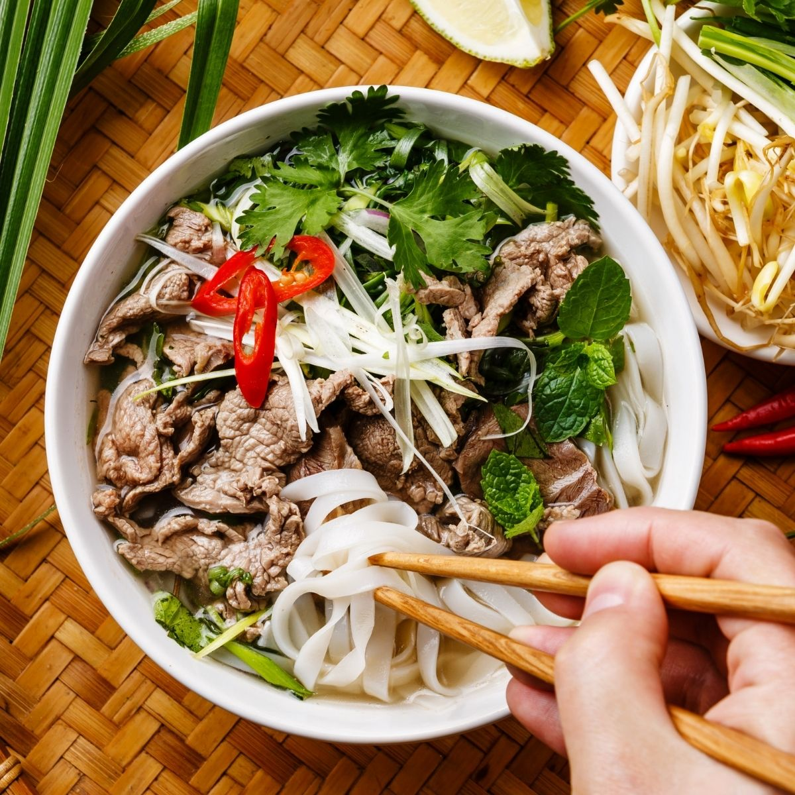

Authentic Vietnamese Pho Recipe

Pho is a beloved Vietnamese dish that consists of rice noodles in a
flavorful broth, typically served with meat and a variety of herbs. This
recipe brings you the authentic taste of pho right in your own kitchen!
Recipe
- 1 lb beef bone
- 2 cloves garlic
- 1 small onion
- 1 cinnamon stick
- 1 tbsp coriander seeds
- 3 star anise
- 1 cardamom pod
- 1 tsp fennel seed
- 8 cups water
- 1 tsp salt
- 4 oz rice noodles
- 4 oz beef sirloin, thinly sliced
- Bean sprouts, basil, cilantro, and lime wedges for serving
How to cook:
-
Preheat oven to 350°F. Place beef bones in a roasting pan and roast for
20 minutes, until browned.
-
In a large pot, add the roasted beef bones, garlic, onion, cinnamon
stick, coriander seeds, star anise, cardamom pod, fennel seeds, and
water. Bring to a boil, then reduce heat to low and simmer for 2 hours.
-
Strain the broth through a fine-mesh sieve and discard the solids.
Return the broth to the pot and add the salt. Bring to a boil.
- Cook the rice noodles according to package instructions.
-
In each bowl, add a portion of noodles and beef slices. Ladle the hot
broth over the top and add the bean sprouts, basil, cilantro, and lime
wedges to serve.